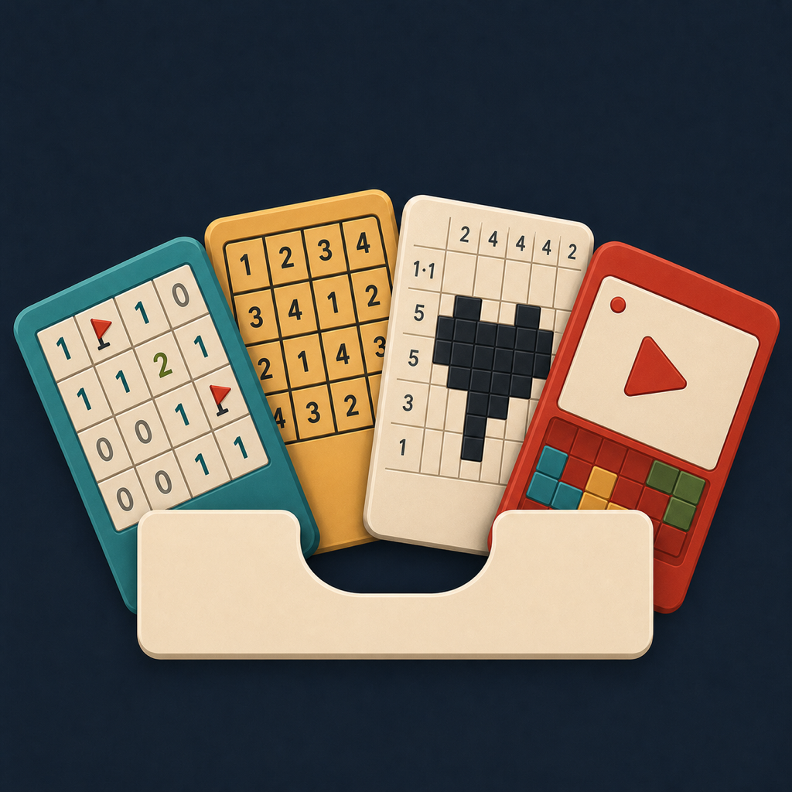
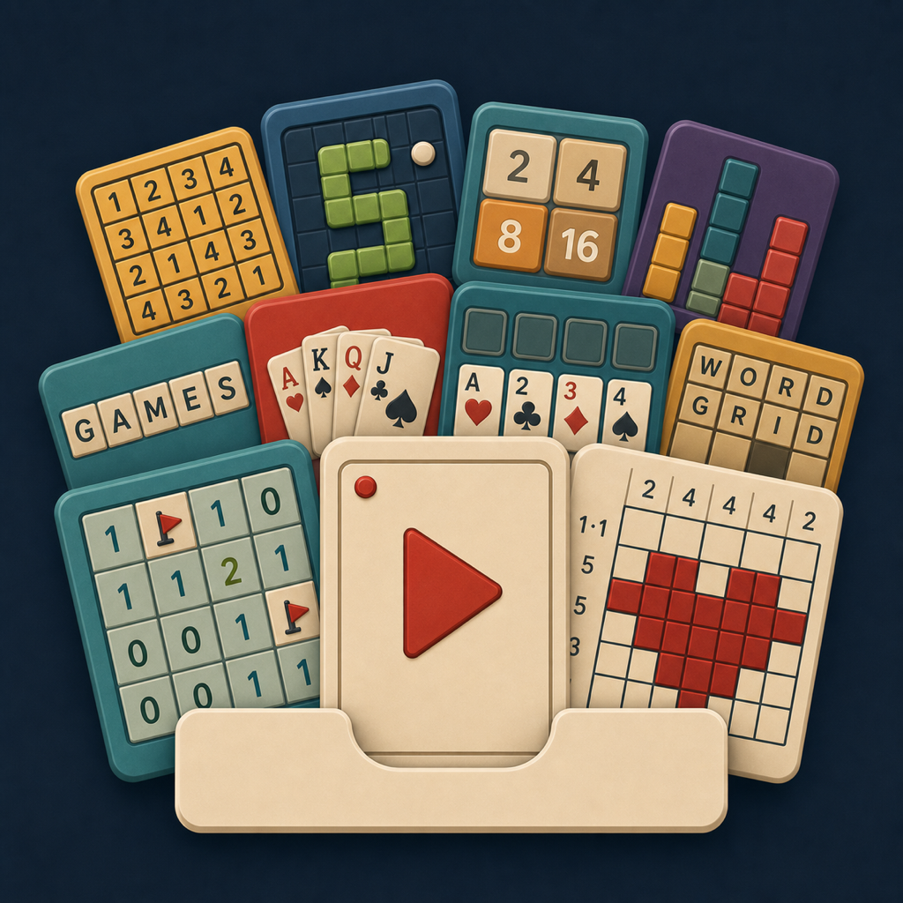
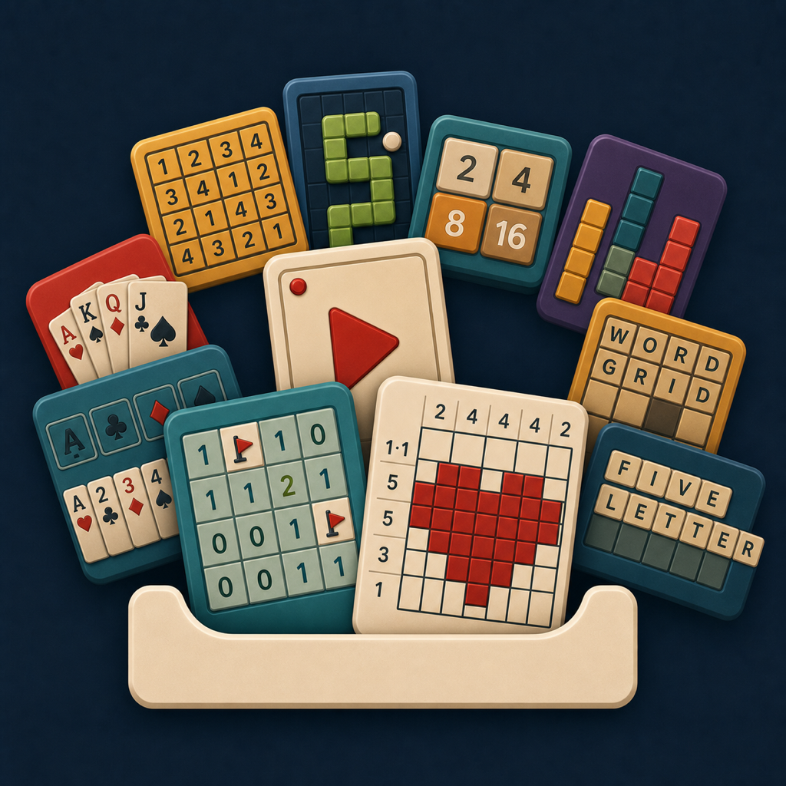
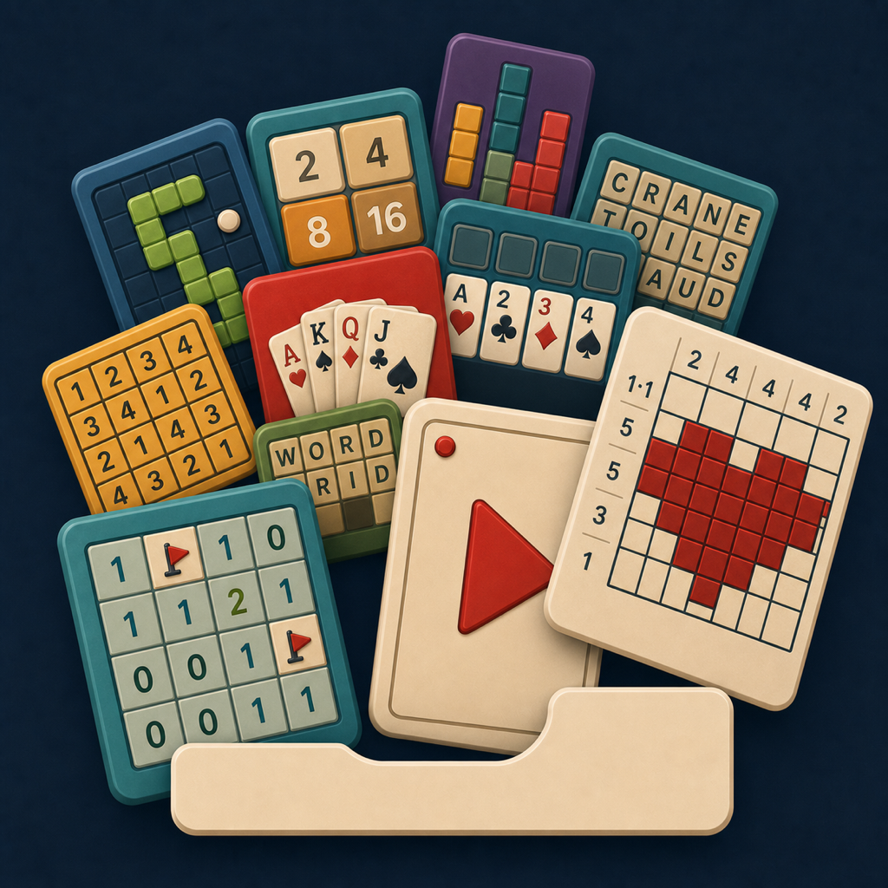
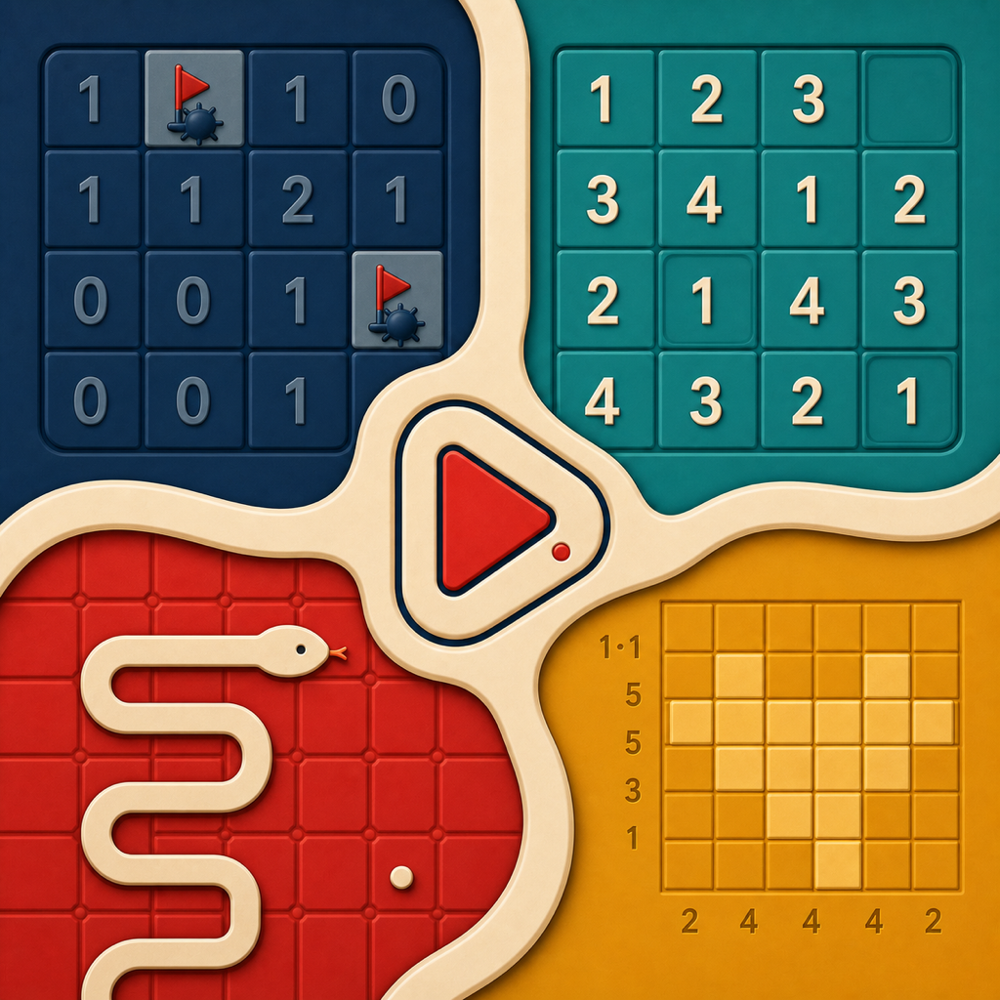

9A.2
Video drawer
The original winner and stable benchmark: four clear focus cards grounded by the drawer.
Two new 9A.3 refinements restore the explosion while treating Video Mode as one feature among the games. They sit beside the four surviving references—nothing else is surfaced in this round.

The original winner and stable benchmark: four clear focus cards grounded by the drawer.

The first current-catalog pass: broad representation, with Video Mode standing alone in front.

Three overlapping focus cards anchor a wide, balanced explosion of current games.

A deeper asymmetric eruption with Video Mode tucked into the game-card foreground.

The distinctive full-bleed games-and-video construction, retained as an alternate direction.

The strongest abstract alternative: one ribbon, four mechanics, and an integrated viewing aperture.